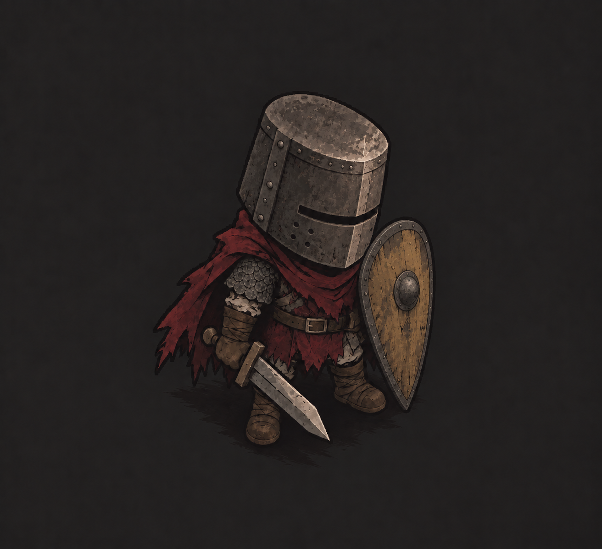

Long rounded kite
1160–1180 · Western European manuscript comparison
E69; manuscript silhouette, not a surviving French shield
S13 helmet, body, sword, cloth, palette and view preserved. Rounded teardrop shield, ochre wood and boss are visible; lower tip longer than the original.
Exact S13 base · Exact generation request